Loading ...
|
3-4-2-1
|
Tunisia | 0 | - | 4 | Japan |
3-4-2-1
|
| HT 0-2 | ||||||
|
FIFA World CupSunday 21 June 2026
|
||||||
- Venue
- Estadio Monterrey
- Attendance
- 51,243
- Referee
- István Kovács
- 2
Substitution46'
E. Saad
I. Gharbi
D. Bronn
M. Ben Hmida
Substitution64'
S. Tounekti
F. Chaouat
- 2
Substitution90+1'
E. Skhiri
R. Khedira
A. Abdi
E. Achouri
Whistle45+5'
45+5'
Goal4'
D. Kamada
Assist: K. Nakamura
Goal31'
A. Ueda
Assist: K. Itakura
Goal69'
J. Ito
Assist: A. Ueda
Substitution73'
D. Kamada
J. Suzuki
Substitution74'
R. Doan
Y. Sugawara
- 2
Substitution79'
K. Nakamura
Y. Suzuki
T. Tomiyasu
A. Seko
Goal83'
A. Ueda
Assist: K. Sano
Substitution84'
A. Ueda
K. Goto
Tunisia | |
|---|---|
Goalkeeper | |
| 16 | A. Dahmen |
Defender | |
| 3 | M. Talbi |
| 4 | O. Rekik |
| 6 | D. Bronn 46' |
Midfielder | |
| 2 | A. Abdi 90+1' |
| 8 | E. Saad 46' |
| 10 | H. Mejbri |
| 17 | E. Skhiri 90+1' |
| 20 | Y. Valery |
| 25 | A. Ben Slimane |
Forward | |
| 26 | S. Tounekti 64' |
Substitutes | |
| 7 | E. Achouri 90+1' |
| 11 | I. Gharbi 46' |
| 13 | R. Khedira 90+1' |
| 19 | F. Chaouat 64' |
| 21 | M. Ben Hmida 46' |
Japan | |
Goalkeeper | |
| 1 | Z. Suzuki |
Defender | |
| 4 | K. Itakura |
| 21 | H. Ito |
| 22 | T. Tomiyasu 79' |
Midfielder | |
| 7 | A. Tanaka |
| 10 | R. Doan 74' |
| 13 | K. Nakamura 79' |
| 14 | J. Ito 69' |
| 15 | D. Kamada 4'73' |
| 24 | K. Sano |
Forward | |
| 18 | A. Ueda 31'83'84' |
Substitutes | |
| 2 | Y. Sugawara 74' |
| 9 | K. Goto 84' |
| 17 | Y. Suzuki 79' |
| 20 | A. Seko 79' |
| 25 | J. Suzuki 73' |


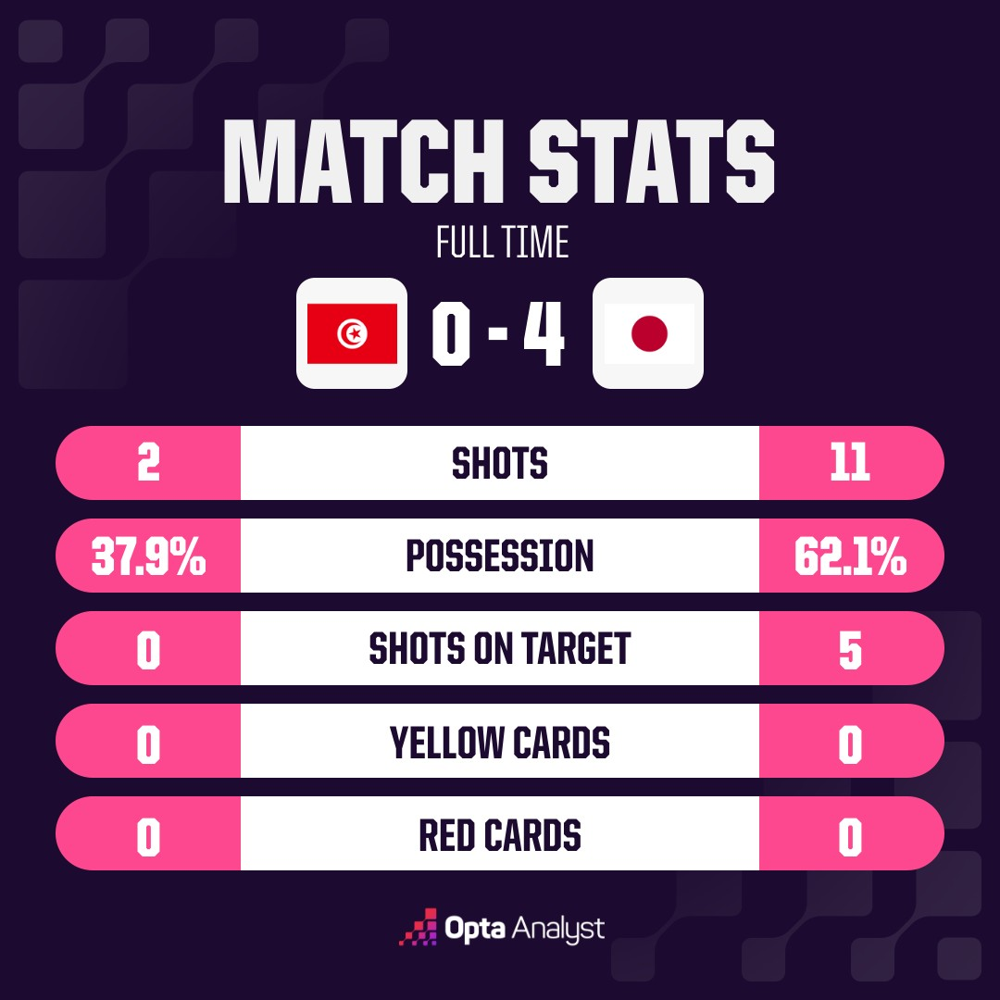
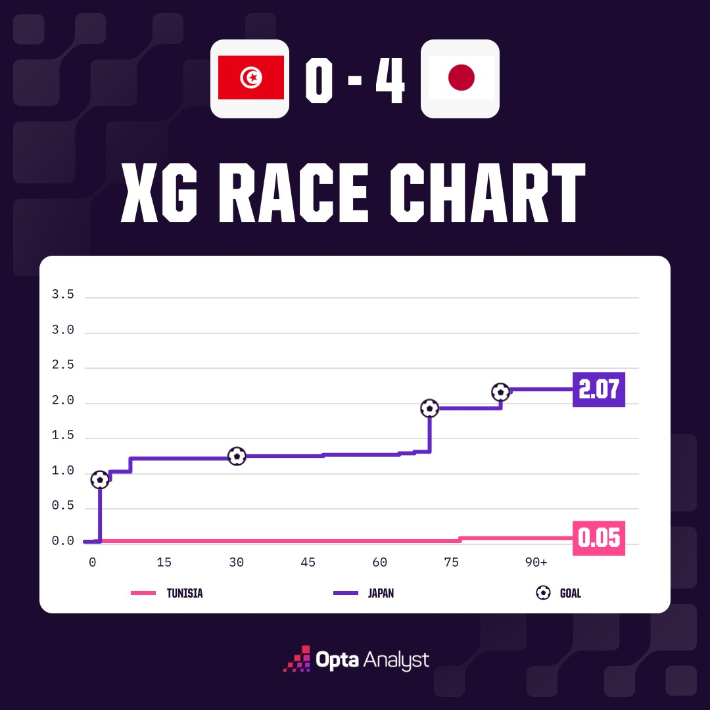
97'
Japan are undefeated in their last 4 games in the FIFA World Cup, their longest unbeaten streak in the competition (since at least 1965/1966).
97'
Tunisia failed to attempt a shot on target in this game, it's the first time they failed to attempt a shot on target in a game in the FIFA World Cup since facing Japan on 14th June 2002.
97'
Tunisia attempted 2 shots in this game, their lowest total in a single match in the 2026 FIFA World Cup.
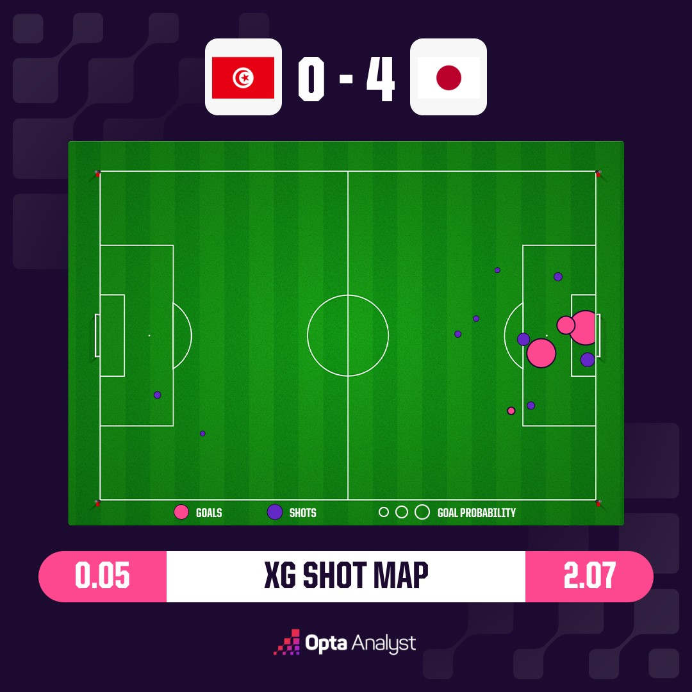
90+6'
FULL-TIME! That’s it for this game, as the referee blows the final whistle, with Japan getting the better of Tunisia 0-4.
90+6'
Still behind, but Tunisia are refusing to roll over - defensive urgency rising as they fend off more pressure and push for a late turnaround.
90+6'
Not much goalmouth action to speak of in this period of the game, with no attempts made from either side. This game could spark at any moment, however. It is Japan who have had more of the ball, controlling 63 per cent possession in the last 10 minutes.
90+5'
A foul from Yan Valery on Keisuke Goto sees Japan win a free-kick, but it is not in a dangerous position, so Tunisia should be confident they can defend it easily enough.
90+2'
A foul from Kaishu Sano on Hannibal Mejbri sees Tunisia win a free-kick, but it is not in a dangerous position, so Japan should be confident they can defend it easily enough.
90+1'
A foul from Ayumu Seko on Firas Chaouat sees Tunisia win a free-kick, but it is not in a dangerous position, so Japan should be confident they can defend it easily enough.
90+1'
Ali Abdi’s match is over as Tunisia decide to make a substitution. Elias Achouri enters the field in what looks like a tactical change.
90+1'
Ellyes Skhiri’s match is over as Tunisia decide to make a substitution. Rani Khedira enters the field in what looks like a tactical change.
90+1'
Masterclass in game management from Japan. They're making Tunisia chase ghosts with these patient passing moves, content to keep the ball until the final whistle.
85'
BLOCK! An intervention from Omar Rekik might have just prevented a goal, with the defending player getting in the way of an attempt from Junya Ito. Solid defending there!
85'
The Japan manager is looking to the substitutes’ bench, bringing on Keisuke Goto in place of Ayase Ueda. Will the change make a difference? Let’s find out!
83'
Kaishu Sano has assisted his first goal in the 2026 FIFA World Cup.
83'
Ayase Ueda has attempted 5 shots, his highest total in a single match in the FIFA World Cup.
83'
GOAL! Japan have extended their lead! It's Ayase Ueda who has got the goal, and Tunisia are now four goals behind, with Japan now in a strong position to record a victory.
83'
Ayase Ueda has scored his second goal in the 2026 FIFA World Cup.
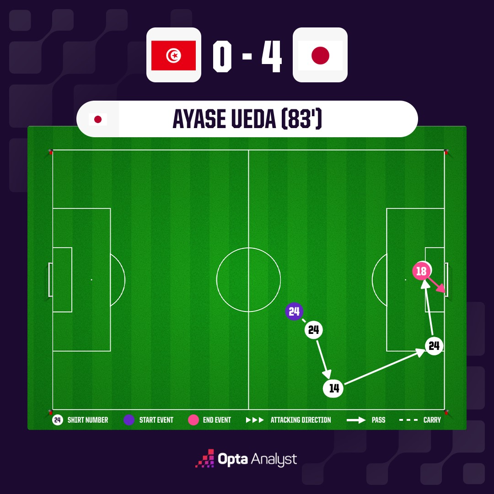
81'
Tunisia have not had a shot on target so far in this game.
80'
A rash challenge from Hiroki Ito, who sends Hannibal Mejbri tumbling, giving Tunisia a free-kick. It is not in a threatening position, but it gives them a chance to get back on the ball.
80'
A free-kick to Tunisia, as Ao Tanaka goes in and fouls Hannibal Mejbri. However, Japan will not mind giving one away in this area too much, with plenty of distance to their goal.
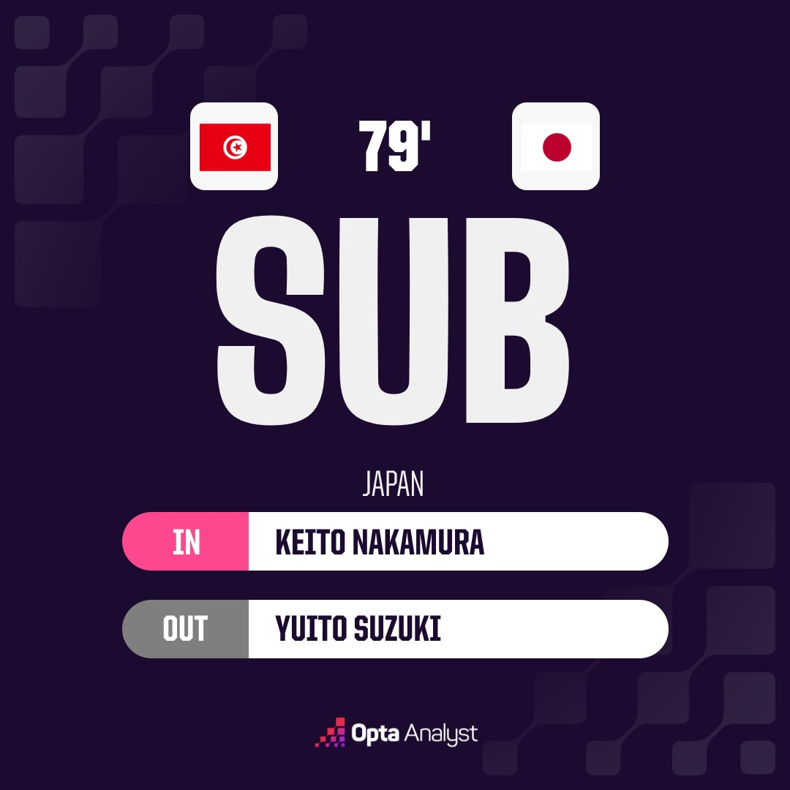
79'
Japan are making a tactical change. Takehiro Tomiyasu is leaving the field and in their place comes Ayumu Seko – we will soon see if this switch has the desired impact.
79'
Keito Nakamura’s match is over as Japan decide to make a substitution. Yuito Suzuki enters the field in what looks like a tactical change.
76'
That’s offside! A switched-on defensive line from Tunisia, as they step up at the right time to catch Keito Nakamura offside, and the assistant referee’s flag is up.
76'
No luck – it’s offside! Omar Rekik looked to dart in behind and get on the end of a pass, yet they just went too early, and the flag is up to signal offside.
76'
With 15 minutes left to play, plus stoppage time, it is Japan who have had the better of the possession, with 62.98%. Tunisia, on the other hand, have had 37.02% of the ball so far.
75'
Shot blocked! Ismaël Gharbi unleashes an attempt at goal, but the ball does not reach its target thanks to Takehiro Tomiyasu, who makes a solid block to stem the danger – for now.
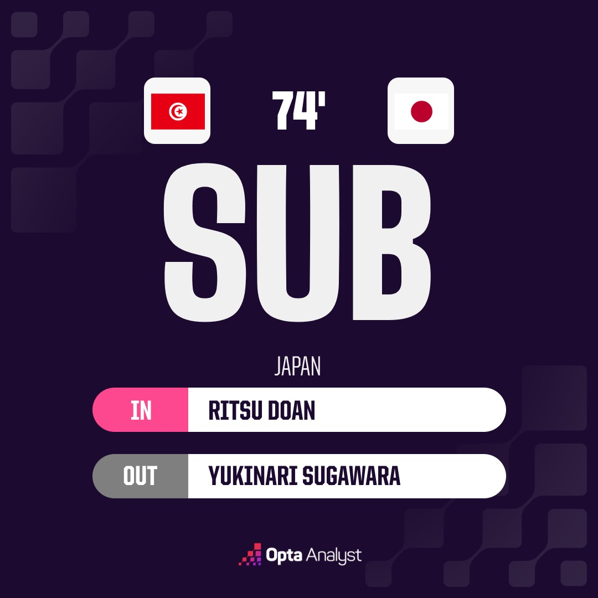
74'
Japan are making a tactical change. Ritsu Doan is leaving the field and in their place comes Yukinari Sugawara – we will soon see if this switch has the desired impact.
73'
A substitution for Japan sees Daichi Kamada replaced by Junnosuke Suzuki. There does not appear to be any obvious sign of an injury, so that is a tactical switch.
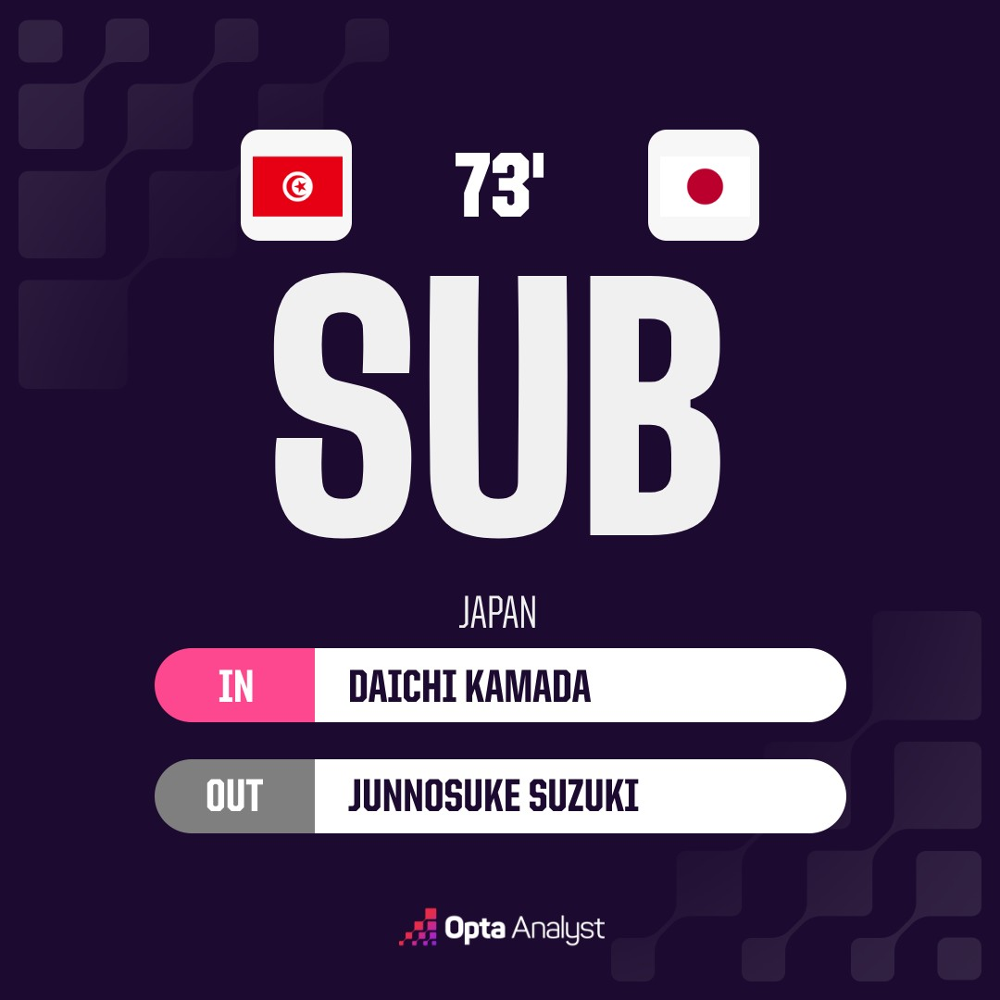
69'
Ayase Ueda has assisted his first goal in the 2026 FIFA World Cup.
69'
Japan have scored 3 goals in the FIFA World Cup game for the first time since 24th June 2010 against Denmark (W3-1).
69'
Junya Ito has scored his first goal in the 2026 FIFA World Cup.
69'
GOAL! It is 3-0 to Japan now, with Junya Ito having put them will in control. Is there any way back for Tunisia, or will Japan see this one out with ease?
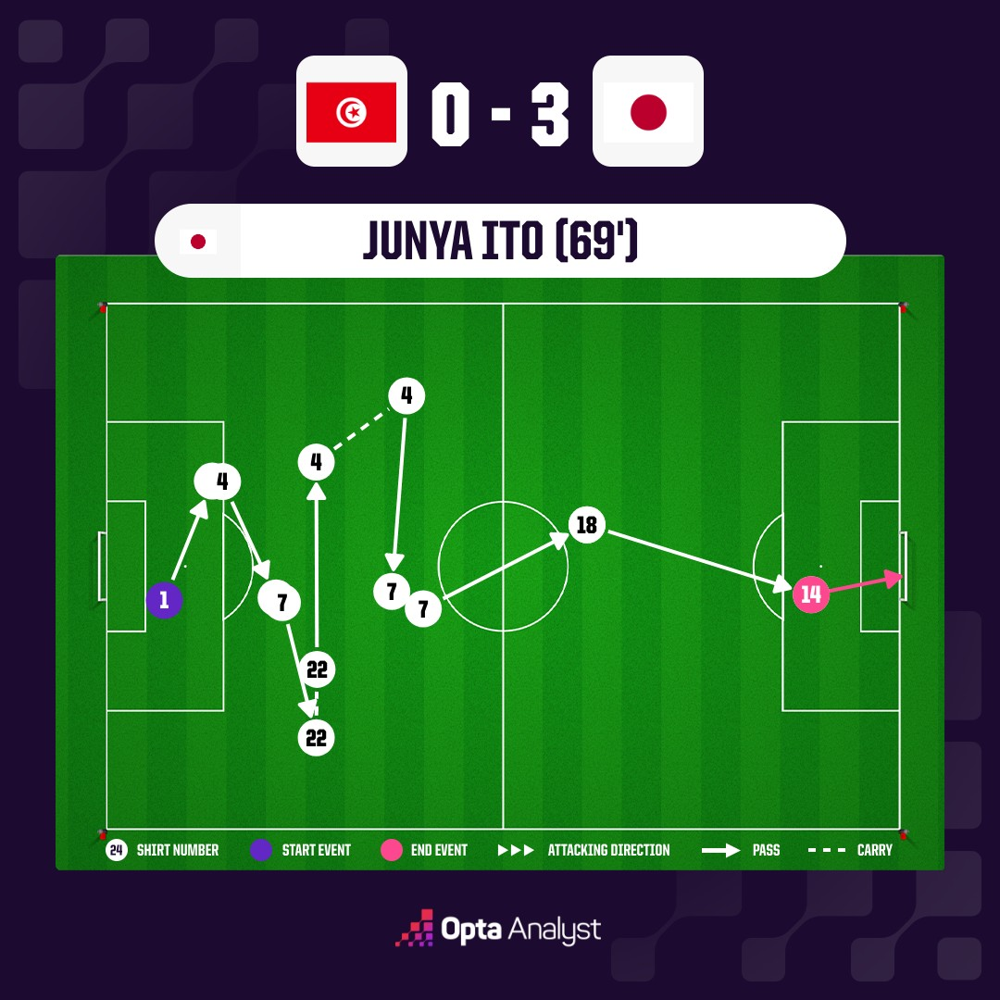
67'
A rash challenge from Keito Nakamura, who sends Firas Chaouat tumbling, giving Tunisia a free-kick. It is not in a threatening position, but it gives them a chance to get back on the ball.
66'
Great block from Yan Valery, as they get in the way of an attempt from Keito Nakamura that might have been set to cause the goalkeeper some problems. Solid defending from the Tunisia player.
66'
Just over an hour played, so let’s check on the shot count for each side. Japan have had 7, getting 3 of those on target. Tunisia, meanwhile, have had no efforts on target, and 1 overall.
65'
Plenty of the ball in the last quarter-of-an-hour of this match for Japan, but still Tunisia stand firm, despite having had only 34.66% of the ball in that period. Can Japan make their possessional dominance count?
65'
Tunisia are making a tactical change. Sebastian Tounekti is leaving the field and in their place comes Firas Chaouat – we will soon see if this switch has the desired impact.
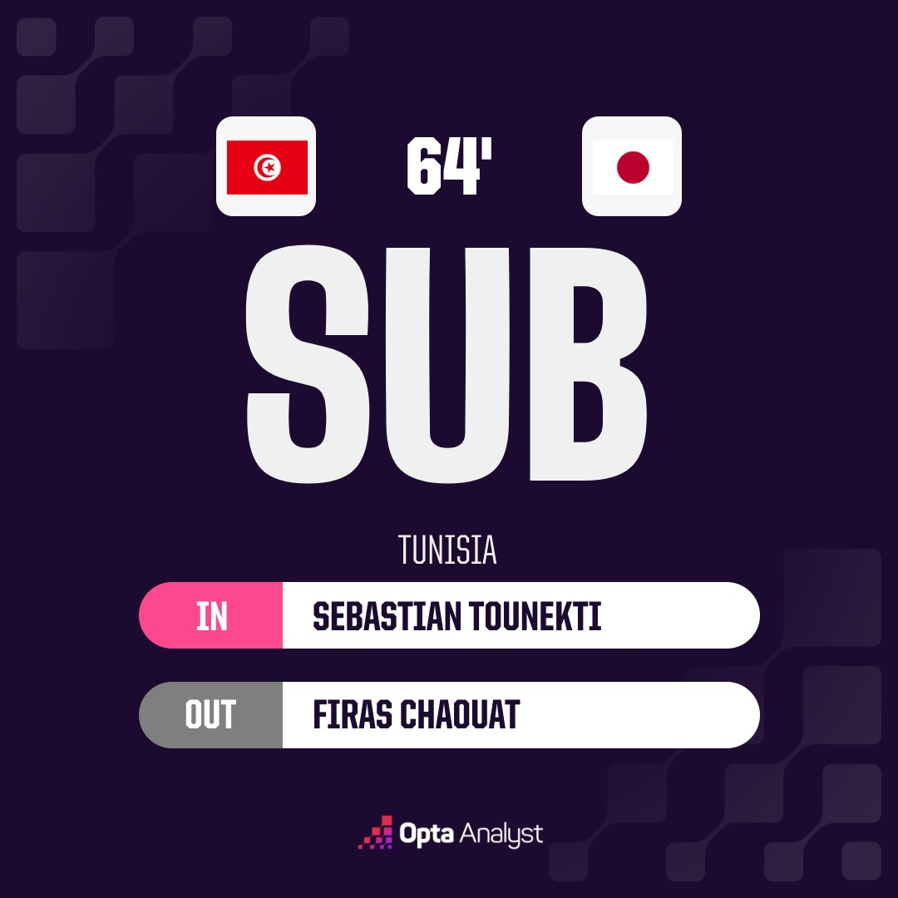
63'
It has been 60 minutes since Tunisia last attempted a shot in this game.
63'
Tunisia have a corner to defend now after Montassar Talbi diverts an attempt from Ayase Ueda out of play. Can Japan take this chance to get a good delivery in and really test their opponent’s defence?
62'
Hannibal Mejbri goes in on Kaishu Sano and concedes a foul. The free-kick is not in a particularly dangerous area from Tunisia’s viewpoint, though.
60'
Despite trailing, Tunisia are showing real defensive grit, digging in and stopping further damage as they try to build a platform.
58'
A rash challenge from Ali Abdi, who sends Ritsu Doan tumbling, giving Japan a free-kick. It is not in a threatening position, but it gives them a chance to get back on the ball.
58'
This game is certainly in a bit of a lull now, with neither team having had an attempt at goal in the past 10 minutes. It could do with something to spark it into life. Japan have had more possession during the quiet spell, but are yet to do much with it.
55'
A free-kick to Tunisia, as Hiroki Ito goes in and fouls Ismaël Gharbi. However, Japan will not mind giving one away in this area too much, with plenty of distance to their goal.
51'
Despite trailing, Tunisia are showing real defensive grit, digging in and stopping further damage as they try to build a platform.
49'
Free-kick! A foul from Hiroki Ito on Ismaël Gharbi. It is well away from Japan’s goal, so it is unlikely to result in a chance for Tunisia.
48'
That is a disappointing effort from Ao Tanaka, who went for glory but got their attempt wrong, and the shot sailed off target. A frustrating moment for Japan.
46'
Tunisia are making a tactical change. Dylan Bronn is leaving the field and in their place comes Mohamed Ben Hmida – we will soon see if this switch has the desired impact.
46'
Substitution! Ismaël Gharbi replaces Elias Saad for Tunisia as the manager shuffles the pack. Can Ismaël Gharbi make an impression as this match continues?
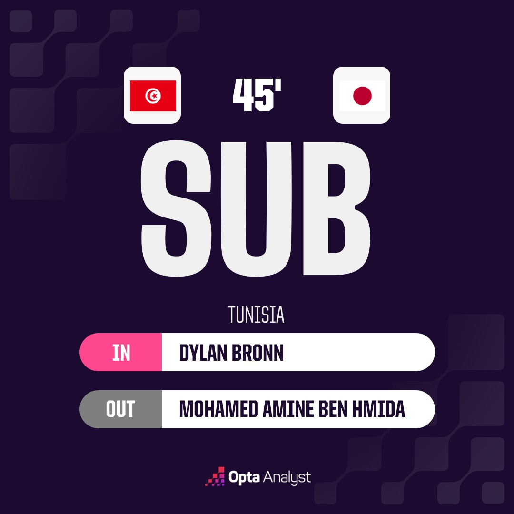
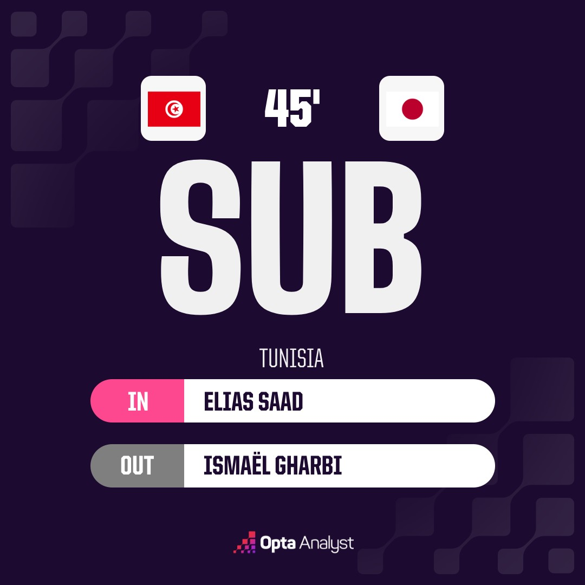
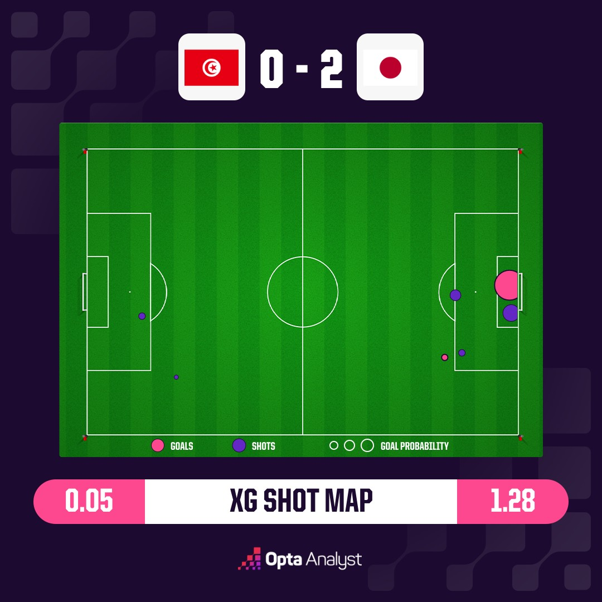
45+5'
The first half comes to a close and it’s Japan who have the lead over Tunisia at Estadio Monterrey, with the scoreline 0-2 at the interval. Will Tunisia turn this around after the break?
45+4'
Ko Itakura goes in on Elias Saad and concedes a foul. The free-kick is not in a particularly dangerous area from Japan’s viewpoint, though.
45+3'
Japan have had plenty of the ball in the last 15 minutes, with 75.71% possession compared to just 24.29% for their opponents. However, there’s not been any goal to come from that possessional dominance just yet.
45+2'
Free-kick! A foul from Hannibal Mejbri on Zion Suzuki. It is well away from Tunisia’s goal, so it is unlikely to result in a chance for Japan.
45+1'
In the last 15 minutes, it is Japan who have dominated the ball, having seen 69.27% of the possession, yet they have not been able to go and turn that into a single shot, so there is no imminent sign of a goal.
45+1'
Despite trailing, Tunisia are showing real defensive grit, digging in and stopping further damage as they try to build a platform.
43'
Foul! A free-kick now in a dangerous area for Japan, after Daichi Kamada is fouled by Dylan Bronn. Can Japan make the most of this opportunity?
41'
Tunisia have not had a shot on target so far in this game.
41'
A lull in this match, as the teams prob and probe, but without much success. It has been 10 minutes since there was an attempt from either side, though Japan are seeing more of the ball, with 60 per cent possession to Tunisia’s 40 per cent during that time.
40'
A foul from Junya Ito on Ali Abdi sees Tunisia win a free-kick, but it is not in a dangerous position, so Japan should be confident they can defend it easily enough.
39'
Great defending from Japan, who are staying organised and winning key battles to preserve their lead.
36'
A rash challenge from Kaishu Sano, who sends Hannibal Mejbri tumbling, giving Tunisia a free-kick. It is not in a threatening position, but it gives them a chance to get back on the ball.
35'
A foul from Hannibal Mejbri on Junya Ito sees Japan win a free-kick, but it is not in a dangerous position, so Tunisia should be confident they can defend it easily enough.
33'
It has been 30 minutes since Tunisia last attempted a shot in this game.
31'
Ko Itakura has assisted his first goal in the 2026 FIFA World Cup.
31'
Japan have attempted the last 5 shots in this game, Tunisia last shot was taken by Hannibal Mejbri in the third minute.
31'
Is that game over? Japan are now well ahead, having extended their lead to 2 goals thanks to Ayase Ueda’s effort. It’s now 2-0, and Tunisia face an uphill battle to get back into it.
31'
Ayase Ueda has scored his first goal in the 2026 FIFA World Cup.
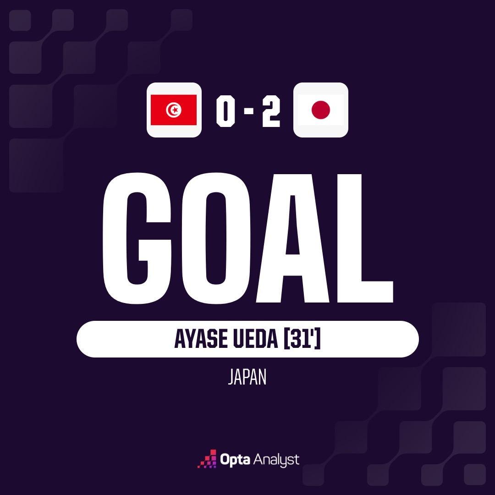
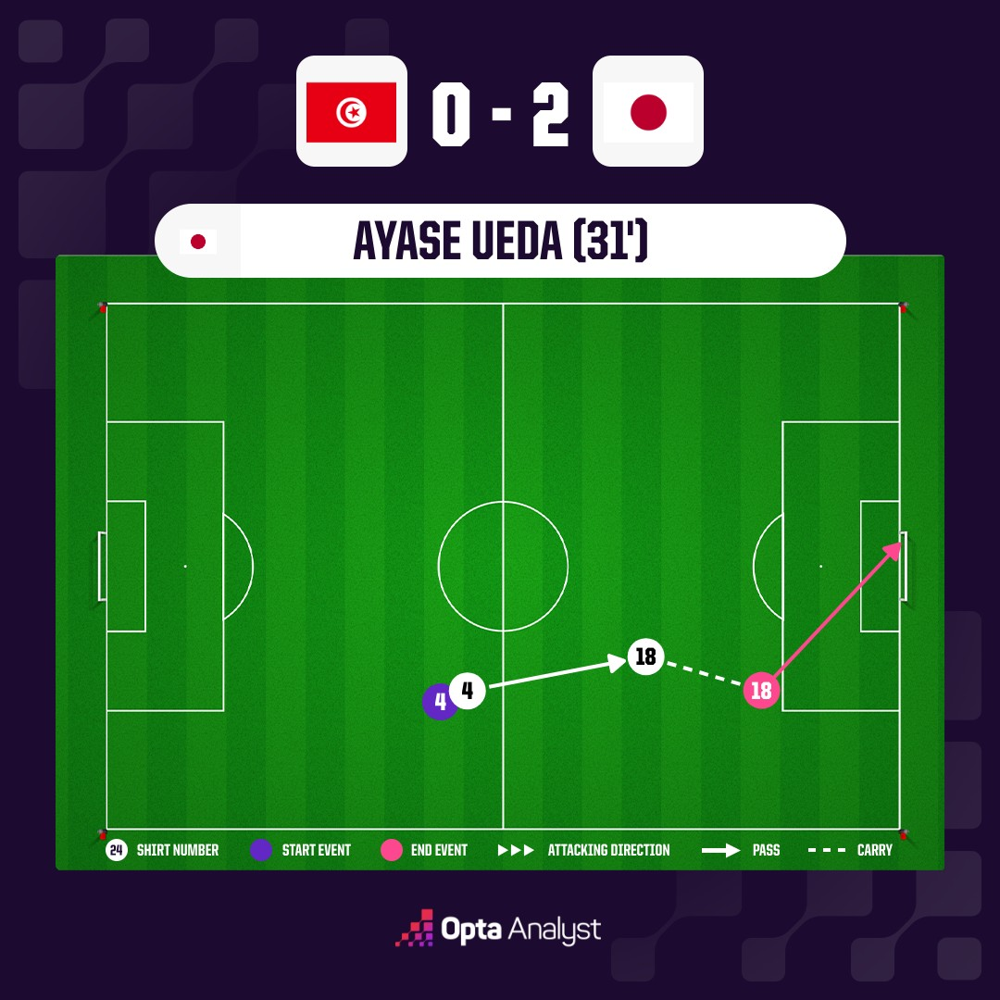
30'
Strong early signals from Japan at the back — calm and commanding as they break up attacks with ease.
28'
Plenty of the ball in the last quarter-of-an-hour of this match for Japan, but Tunisia have been able to hold them off with ease, with Japan having failed to even muster a shot at goal.
22'
A free-kick to Tunisia, as Takehiro Tomiyasu goes in and fouls Hannibal Mejbri. However, Japan will not mind giving one away in this area too much, with plenty of distance to their goal.
20'
Japan have had plenty of the ball in the last 15 minutes, with 65.49% possession compared to just 34.51% for their opponents. However, there’s not been any goal to come from that possessional dominance just yet.
20'
No goalmouth action for some time now, with neither team having had a shot in the past 10 minutes. Will there be a moment that changes things soon? Japan have seen plenty of the ball, however, with 60 per cent of the possession in their favour during that period.
20'
A rash challenge from Junya Ito, who sends Aymen Dahmen tumbling, giving Tunisia a free-kick. It is not in a threatening position, but it gives them a chance to get back on the ball.
19'
Tunisia may be behind, but they’re battling hard defensively to stop the gap from widening. A gritty response at the back.
18'
Takehiro Tomiyasu goes in on Hannibal Mejbri and concedes a foul. The free-kick is not in a particularly dangerous area from Japan’s viewpoint, though.
16'
Strong early signals from Japan at the back — calm and commanding as they break up attacks with ease.
15'
Corner! Tunisia are pushing for a goal and now they have an opportunity from this set-piece.
14'
A foul from Ayase Ueda on Montassar Talbi sees Tunisia win a free-kick, but it is not in a dangerous position, so Japan should be confident they can defend it easily enough.
12'
Free-kick! A foul from Elias Saad on Ritsu Doan. It is well away from Tunisia’s goal, so it is unlikely to result in a chance for Japan.
10'
An opportunity for Japan to extend their lead goes begging, as Takehiro Tomiyasu is unable to convert from a good opening. Will they live to regret that miss?
10'
SAVED! Good work from Aymen Dahmen, who stands firm to deny Ayase Ueda, who managed to get a shot away from inside the Tunisia area.
9'
Tunisia may be behind, but they’re battling hard defensively to stop the gap from widening. A gritty response at the back.
8'
A rash challenge from Takehiro Tomiyasu, who sends Hannibal Mejbri tumbling, giving Tunisia a free-kick. It is not in a threatening position, but it gives them a chance to get back on the ball.
6'
MISS! Ayase Ueda fluffs their lines, and will Japan be made to pay for that miss? Tunisia could have been down and out if that attempt had gone in, but at least they have not fallen even further behind in this contest.
4'
Keito Nakamura has assisted his first goal in the 2026 FIFA World Cup.
4'
GOAL! 1-0! Daichi Kamada scores for Japan and what a start to the match that is! Daichi Kamada applies the decisive touch from inside the box to put Japan in a strong early position and leave Tunisia with plenty of work to do.
4'
Daichi Kamada has scored his second goal of the 2025 FIFA World Cup this edition, more than any other Japan player.
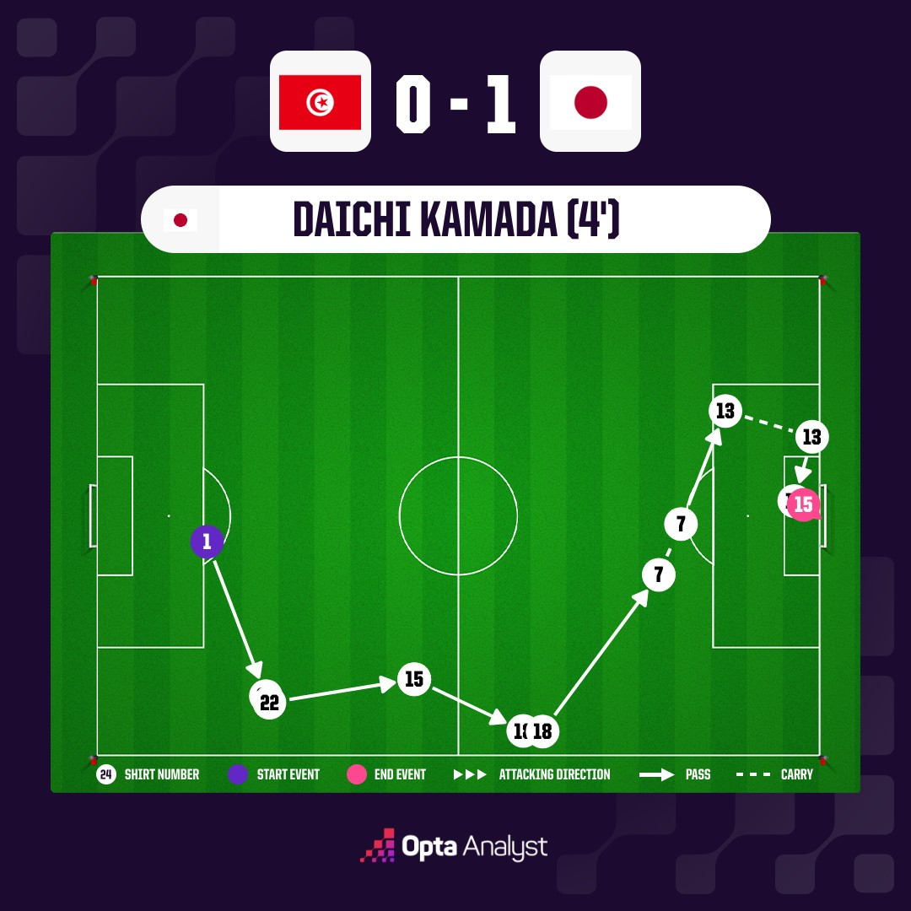
3'
MISS! The score remains 0-0, with Japan relieved after Tunisia’s Hannibal Mejbri goes for goal but sends their attempt off target. Not one to write home about, that one.
1'
A rash challenge from Montassar Talbi, who sends Ayase Ueda tumbling, giving Japan a free-kick. It is not in a threatening position, but it gives them a chance to get back on the ball.
1'
KICK-OFF! And here we go! We are up and running in this clash between Tunisia and Japan at Estadio Monterrey. Stay tuned for all the action as it happens!
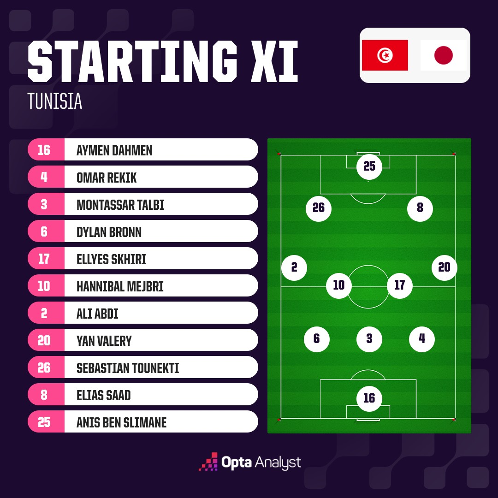
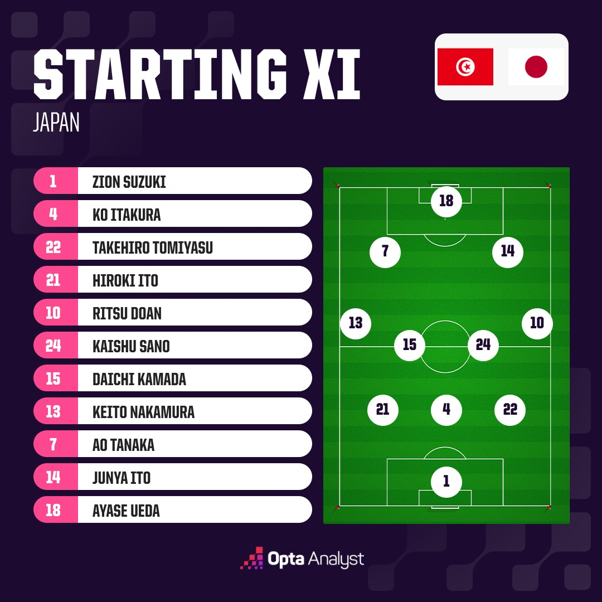
Two teams looking for their first win in the FIFA World Cup group stage will clash at Estadio Monterrey on Saturday, as Tunisia take on Japan.
Tunisia were defeated in their opening World Cup group stage match, falling 5-1 against Sweden on June 14. Omar Rekik was the only player to score in the loss. They are winless in their last four games in all competitions. In six games this year, they have one win, one draw, and four losses.
Japan played out a 2-2 draw against the Netherlands in their opening World Cup game, a June 14 group stage clash at Dallas Stadium, extending their unbeaten streak to eight. Keito Nakamura and Daichi Kamada netted in the draw.
Japan are second in the group on one point, while Tunisia's zero points place them fourth. Atop the group on three points are Sweden. The Netherlands are third on one point.
When the two sides last met in action, Japan were victorious 2-0 in a friendly at NOEVIR Stadium Kobe in October 2023. Kyogo Furuhashi opened the scoring for the Japanese side in the 43rd minute. Junya Ito also was on the scoresheet.
Rekik has the early World Cup scoring lead for Tunisia after netting against Sweden. With goals against the Netherlands, Nakamura and Kamada are the early leading World Cup scorers for Japan.
Japan have scored in each of their last eight matches in all competitions. They haven't been shut out since a friendly with United States in September 2025.
In their last six matches in all competitions, Tunisia have won one, drawn two and lost three. The Tunisian side scored three and conceded 12 over that stretch, scoring first in two of the six contests. A majority of their goals (two) came in the first half, while their opponents netted three times in the first 45 minutes. Japan have won five and drawn one in their last six. The Japanese side scored 10 and conceded two in that period, netting first in five of the six. They had three goals in the first half, while their opponents failed to find the net before the break.
-
General
Possession 37.9% 37.87762.12362.1% Possession lost in defensive half 35 351818 Possession lost in middle third 62 624242 Duels 82 828484 Duels success rate 46.3% 46.34151.1951.2% Aerial duels 18 181818 Aerial duels won 22.2% 22.22277.77877.8% Successful dribbles 2 244 Fouls won 15 1588 Offsides 1 111 Corner awarded 3 355 -
Distribution
Passes 354 354583583 Long passes 56 563232 Long passes proportion (%) 15.8% 15.8195.4895.5% Passing accuracy 80.2% 80.22689.36589.4% Passes in opponents' half 163 163330330 Passing accuracy in opponents' half (%) 68.1% 68.09884.54584.5% Total passes in the final third 79 79135135 Passing accuracy in final third (%) 53.2% 53.16570.3770.4% Forward passes 214 214364364 Forward passes (%) 60.5% 60.45262.43662.4% Through balls 0 022 Final third entries 59 597070 Penalty area entries 13 132626 Total open play crosses 6 666 Crosses 10 101111 Crossing accuracy 20.0% 2018.18218.2% -
Attack
Goals 0 044 Shots 2 21111 Shots on target 0 055 Blocked shots 1 133 Headed shots 0 011 Shots outside the box 1 133 Shots inside the box 1 188 Shots accuracy excluding blocked shots 0.0% 062.562.5% Shooting accuracy 0.0% 045.45545.5% Key Passes 1 199 -
Defence
Tackles 18 181818 Tackles success rate 88.9% 88.88966.66766.7% Clearances 23 232525 Interceptions 14 1477 Recoveries 38 383535 Attacking third recovery 0 022 Defensive third recovery 25 251616 Midfield third recovery 13 131717 Recoveries in attacking half (%) 0.0% 05.7145.7% -
Discipline
Fouls conceded 8 81515 Yellow cards 0 000 Red cards 0 000